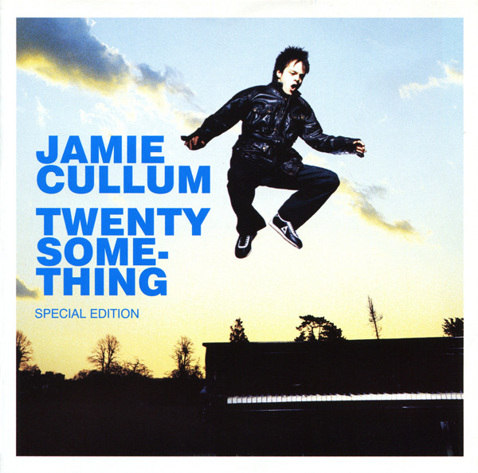
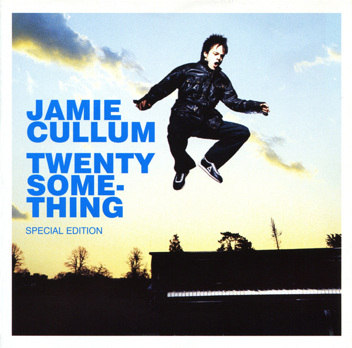

With a Grammy, two Golden Globe, two GQ Man of the Year, three Brit, three Sony Radio and numerous other nominations and awards under his belt,
Jamie Cullum is a success story around the planet. The most successful UK jazz artist ever, having sold over 10 million albums worldwide.
It's through jazz that Jamie first made his mark, with the multi platinum Twentysomething LP, but it is his knowledge and love of all music that has helped
propel him onto the world stage.
The sensational musician has the ability and versatility to blur musical genres with his unique take on jazz, pop and rock and his success is truly global,
taking him from Seoul to Sao Paulo, FujiRock to Glastonbury and from Hamburg to Hollywood where he achieved great acclaim collaborating with Clint Eastwood
on the Golden Globe nominated score for Gran Torino. Jamie has not just written for the London West End Stage but also for BBC Television and has presented
TV shows on VH-1, Sky and the BBC. He has hosted several documentaries for BBC Radio’s 4 and 2 featuring such eminent subjects as Blue Note Records, Herbie
Hancock, Jimi Hendrix and Quincy Jones. He currently presents his own award winning weekly prime time show for BBC Radio 2, the highest rated station in
Europe and is proud to have been the first DJ to play the new stars of jazz, Gregory Porter and Laura Mvula. Jamie’s radio show has won two New York Radio
Awards and the prestigious Gold Sony Radio Award in the UK and is now licensed to stations across the dial.
Alongside his songwriting ability, flair as a performer, and natural aptitude as a broadcaster, Jamie has taken his long term love of photography a step
further by teaming up with Leica cameras to produce all the shots for Interlude’s deluxe artwork which can be been on display at Leica’s galleries in
Germany and London as well as in the booklet for the album itself. The musician has also turned magazine publisher. Inspired by Dave Eggars’
Timothy McSweeney’s Quarterley Concern, Jamie created The 88, ‘an occasional magazine for the adventurous thinker’ the heavyweight journal is a
collection of words and pictures curated by Jamie, featuring contributions from his friends.
 
